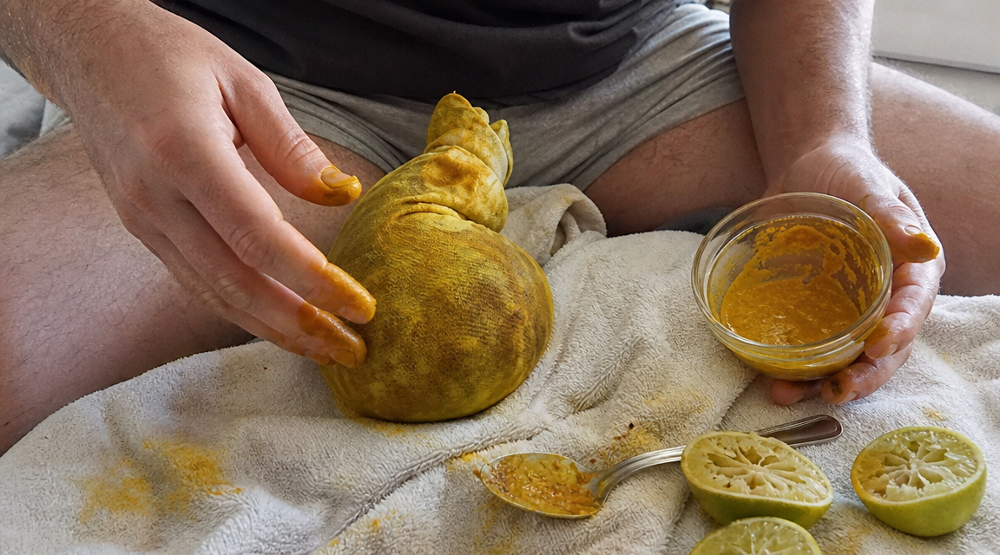

Watch The Presentation Now100% Confidential · Free Educational Video · 18+
If you're a man over 40, you know exactly when your body starts betraying you.
You still want to feel dangerous, wanted, and fully alive — but suddenly your body hesitates. Your mind is ready. Your desire is there. And the confidence you used to count on does not always show up.
So you start hiding from the moment. You stay up late. You say you are exhausted. You blame work, stress, sleep, anything. And every time you dodge it, a little more of the man you remember gets buried in silence.
This is where most men fold. They smile, act normal, and spend years pretending it is not eating them alive. They do not tell their wives. They do not tell their doctor. They barely admit it to themselves.
The lazy answer is "you're just getting older." That answer keeps men weak, quiet, and stuck. The better question is what changed inside your body after 40 — and why Brazilian Turmeric is the natural ingredient men are paying attention to before they accept defeat.
No pills. No prescriptions. No begging a doctor for an awkward conversation.
Fair warning: this presentation does not talk to you like a child. It talks about men's health, aging, performance, and Brazilian Turmeric the way most doctors never have time to explain. If direct truth makes you defensive, close this page.
But if you're a man 40+ who refuses to become invisible in your own marriage...
Watch this before you lose more time pretending.
100% Confidential · Educational Content · 18+